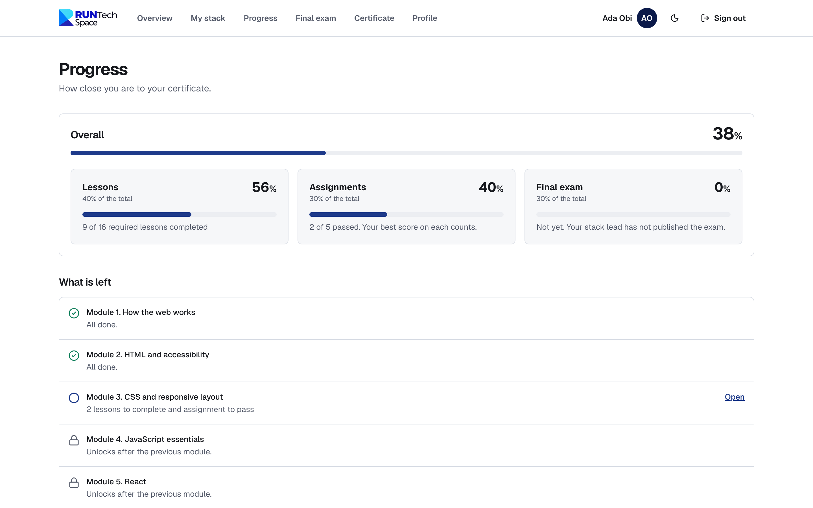

<!-- Laptop scroll scene. Developed standalone, then inlined into paper.html. -->
<style>
  .journey {
    position: relative;
    height: 520vh;
    background: radial-gradient(120% 70% at 50% 40%, #13265f 0%, #0b1a4a 45%, #070f2e 100%);
    color: #fff;
    margin: 0 16px;
    border-radius: 48px;
  }
  .journey .pin {
    position: sticky;
    top: 0;
    height: 100vh;
    overflow: hidden;
    border-radius: 48px;
  }
  .journey .grid-floor {
    position: absolute;
    inset: auto -20% -10% -20%;
    height: 70%;
    background-image:
      linear-gradient(rgba(8, 241, 255, 0.12) 1px, transparent 1px),
      linear-gradient(90deg, rgba(8, 241, 255, 0.12) 1px, transparent 1px);
    background-size: 64px 64px;
    transform: perspective(700px) rotateX(64deg);
    transform-origin: 50% 0;
    mask-image: linear-gradient(to bottom, transparent, #000 30%, #000 60%, transparent);
    opacity: var(--floor, 1);
  }
  .journey .glow {
    position: absolute;
    left: 50%;
    top: 52%;
    width: 900px;
    height: 600px;
    translate: -50% -50%;
    background: radial-gradient(closest-side, rgba(8, 241, 255, 0.35), transparent);
    opacity: var(--glow, 0);
    filter: blur(20px);
  }

  /* copy that changes with the scroll */
  .journey .copy {
    opacity: var(--copy, 1);
    position: absolute;
    left: 0;
    right: 0;
    top: 9vh;
    text-align: center;
    z-index: 5;
    pointer-events: none;
  }
  .journey .copy .line {
    position: absolute;
    inset: 0 0 auto;
    opacity: 0;
    transform: translateY(24px);
    transition:
      opacity 0.6s cubic-bezier(0.22, 1, 0.36, 1),
      transform 0.8s cubic-bezier(0.22, 1, 0.36, 1);
  }
  .journey .copy .line.on {
    opacity: 1;
    transform: none;
  }
  .journey .copy small {
    display: block;
    font-size: 13px;
    letter-spacing: 0.08em;
    text-transform: uppercase;
    color: #08f1ff;
    font-weight: 600;
  }
  .journey .copy b {
    display: block;
    margin-top: 10px;
    font-family: var(--serif);
    font-weight: 400;
    font-size: clamp(2.2rem, 5vw, 4rem);
    letter-spacing: -0.035em;
    line-height: 1.04;
  }

  /* the laptop */
  .journey .scene {
    position: absolute;
    left: 50%;
    top: 50%;
    width: min(700px, 70vw);
    aspect-ratio: 16 / 10;
    translate: -50% -50%;
    perspective: 2000px;
    perspective-origin: 50% 20%;
  }
  .journey .rig {
    position: absolute;
    inset: 0;
    transform-style: preserve-3d;
    transform: translateY(var(--ry, 0px)) rotateX(var(--tilt, 0deg)) rotateY(var(--turn, 0deg)) scale(var(--zoom, 1));
  }
  .journey .lid {
    position: absolute;
    inset: 0;
    transform-style: preserve-3d;
    transform-origin: 50% 100%;
    transform: rotateX(var(--open, 0deg));
  }
  .journey .face {
    position: absolute;
    inset: 0;
    border-radius: 18px 18px 6px 6px;
    backface-visibility: hidden;
  }
  .journey .screen {
    background: #0d0f18;
    padding: 2.2%;
    box-shadow:
      0 0 0 1.5px #3a3e4c,
      0 0 80px rgba(8, 241, 255, var(--sglow, 0));
  }
  .journey .screen .inner {
    position: relative;
    width: 100%;
    height: 100%;
    border-radius: 6px;
    overflow: hidden;
    background: #fff;
  }
  .journey .screen .inner img {
    position: absolute;
    inset: 0;
    width: 100%;
    height: 100%;
    object-fit: cover;
    object-position: top;
    opacity: 0;
    transition: opacity 0.6s ease;
  }
  .journey .screen .inner img.on {
    opacity: 1;
  }
  .journey .screen .off {
    position: absolute;
    inset: 0;
    background: #05070e;
    opacity: var(--dark, 1);
    pointer-events: none;
  }
  .journey .back {
    transform: rotateY(180deg);
    background: linear-gradient(160deg, #cfd5e3, #9aa3b8);
    display: grid;
    place-items: center;
  }
  .journey .back i {
    width: 54px;
    height: 54px;
    border-radius: 14px;
    background: linear-gradient(135deg, #08f1ff 0 45%, #1e3a8a 45%);
    opacity: 0.9;
  }
  .journey .base {
    position: absolute;
    left: -5%;
    right: -5%;
    top: 100%;
    height: 66%;
    transform-origin: 50% 0;
    transform: rotateX(90deg);
    border-radius: 6px 6px 22px 22px;
    background: linear-gradient(#d9dee9, #b4bccd);
    box-shadow: 0 0 0 1px #9aa3b8;
  }
  .journey .base::before {
    content: '';
    position: absolute;
    left: 9%;
    right: 9%;
    top: 8%;
    height: 48%;
    border-radius: 8px;
    background:
      repeating-linear-gradient(90deg, #2a2e3a 0 6.6%, transparent 6.6% 7.4%),
      repeating-linear-gradient(#2a2e3a 0 17%, transparent 17% 20%);
    opacity: 0.85;
  }
  .journey .base::after {
    content: '';
    position: absolute;
    left: 35%;
    right: 35%;
    bottom: 10%;
    height: 28%;
    border-radius: 10px;
    background: rgba(255, 255, 255, 0.35);
    box-shadow: inset 0 0 0 1px rgba(0, 0, 0, 0.08);
  }
  .journey .shadow {
    position: absolute;
    left: 6%;
    right: 6%;
    top: 92%;
    height: 50%;
    background: radial-gradient(closest-side, rgba(0, 0, 0, 0.55), transparent);
    filter: blur(14px);
    transform: translateY(var(--sy, 0px));
    opacity: var(--so, 1);
  }

  /* things that fly out of the screen */
  .journey .chip {
    position: absolute;
    display: flex;
    align-items: center;
    gap: 10px;
    padding: 12px 16px;
    border-radius: 14px;
    background: rgba(255, 255, 255, 0.96);
    color: #0b1230;
    font-size: 14px;
    font-family: Inter, system-ui, sans-serif;
    box-shadow: 0 20px 40px -12px rgba(0, 0, 0, 0.5);
    white-space: nowrap;
    opacity: 0;
    will-change: transform, opacity;
  }
  .journey .chip b {
    font-weight: 600;
  }
  .journey .chip .dot {
    width: 26px;
    height: 26px;
    border-radius: 50%;
    display: grid;
    place-items: center;
    font-size: 13px;
    color: #fff;
    flex: none;
  }
  .journey .finale {
    position: absolute;
    left: 50%;
    bottom: 9vh;
    translate: -50% calc((1 - var(--fin, 0)) * 20px);
    z-index: 6;
    opacity: var(--fin, 0);
    pointer-events: none;
    display: flex;
    align-items: center;
    gap: 18px;
    padding: 10px 10px 10px 26px;
    border-radius: 999px;
    background: rgba(11, 26, 74, 0.86);
    backdrop-filter: blur(14px);
    box-shadow: 0 20px 50px -12px rgba(0, 0, 0, 0.5);
    white-space: nowrap;
  }
  .journey .finale p {
    margin: 0;
    font-family: var(--serif);
    font-size: 24px;
    letter-spacing: -0.02em;
  }
  .journey .progress {
    position: absolute;
    left: 50%;
    bottom: 5vh;
    translate: -50% 0;
    width: 180px;
    height: 3px;
    border-radius: 3px;
    background: rgba(255, 255, 255, 0.15);
    z-index: 5;
  }
  .journey .progress i {
    display: block;
    height: 100%;
    border-radius: inherit;
    background: #08f1ff;
    width: calc(var(--p, 0) * 100%);
  }
  @media (max-width: 700px) {
    .journey {
      height: 420vh;
      margin: 0;
      border-radius: 0;
    }
    .journey .pin {
      border-radius: 0;
    }
    .journey .scene {
      top: 60%;
      width: 88vw;
    }
    .journey .chip {
      font-size: 12px;
      padding: 9px 12px;
    }
  }
</style>

<section class="journey" id="journey" aria-label="A student's journey on RUNTech Space">
  <div class="pin">
    <div class="glow"></div>
    <div class="grid-floor"></div>
    <div class="copy" aria-live="off">
      <div class="line on"><small>Your journey</small><b>It starts with<br />opening a laptop.</b></div>
      <div class="line"><small>Learn</small><b>Lessons from people<br />who do the work.</b></div>
      <div class="line"><small>Practise</small><b>Every answer marked.<br />Every project read.</b></div>
      <div class="line"><small>Finish</small><b>And it ends with<br />proof that you can.</b></div>
    </div>
    <div class="scene">
      <div class="shadow"></div>
      <div class="rig">
        <div class="base"></div>
        <div class="lid">
          <div class="face screen">
            <div class="inner">
              
              
              
              
              <div class="off"></div>
            </div>
          </div>
          <div class="face back"><i></i></div>
        </div>
        <div class="chip" data-chip="0" style="left: -12%; top: 18%"><span class="dot" style="background: #2fae6a">✓</span><span><b>Lesson complete</b> · Flexbox</span></div>
        <div class="chip" data-chip="1" style="right: -14%; top: 8%"><span class="dot" style="background: #1e3a8a">Q</span><span><b>Quiz</b> · 100 / 100</span></div>
        <div class="chip" data-chip="2" style="left: -8%; bottom: 14%"><span class="dot" style="background: #0b1a4a">KA</span><span><b>Your lead:</b> &ldquo;Clean structure.&rdquo; 86/100</span></div>
        <div class="chip" data-chip="3" style="right: -10%; bottom: 26%"><span class="dot" style="background: #08f1ff; color: #0b1a4a">↑</span><span><b>Module 3</b> unlocked</span></div>
        <div class="chip" data-chip="4" style="left: 30%; bottom: -10%"><span class="dot" style="background: #f5c84b; color: #0b1230">★</span><span><b>Certificate issued</b> · verified</span></div>
      </div>
    </div>
    <div class="finale">
      <p>Your proof is one stack away.</p>
      <a class="pill" href="#apply">Start your stack <span class="arr">→</span></a>
    </div>
    <div class="progress"><i></i></div>
  </div>
</section>

<script>
  ;(() => {
    const sec = document.getElementById('journey')
    if (!sec) return
    const reduce = matchMedia('(prefers-reduced-motion: reduce)').matches
    const lines = [...sec.querySelectorAll('.copy .line')]
    const shots = [...sec.querySelectorAll('.screen img')]
    const chips = [...sec.querySelectorAll('.chip')]
    const css = (k, v) => sec.style.setProperty(k, v)
    const clamp = (v, a = 0, b = 1) => Math.min(b, Math.max(a, v))
    const seg = (p, a, b) => clamp((p - a) / (b - a)) // 0..1 within [a, b]
    const ease = (t) => 1 - Math.pow(1 - t, 3)
    const io = (t) => (t < 0.5 ? 4 * t * t * t : 1 - Math.pow(-2 * t + 2, 3) / 2)
    // chips: [appear at, gone at, fly-out depth, drift]
    const chipPlan = [
      [0.3, 0.62, 160, -40],
      [0.36, 0.66, 220, 40],
      [0.46, 0.76, 190, -30],
      [0.52, 0.8, 140, 30],
      [0.8, 1.01, 240, 0],
    ]
    let screen = -1
    let line = -1
    const render = (p) => {
      css('--p', p)
    sec.querySelector('.finale').style.pointerEvents = p > 0.95 ? 'auto' : 'none'
      // 1. lid opens (closed lid faces the viewer from above)
      const open = io(seg(p, 0.04, 0.3))
      css('--open', `${-90 + open * 98}deg`)
      css('--dark', String(1 - seg(p, 0.18, 0.32)))
      css('--sglow', String(0.25 * seg(p, 0.2, 0.35)))
      // 2. camera: from a high three-quarter view to straight on, then a slow turn, then a dive into the screen
      const settle = io(seg(p, 0.0, 0.36))
      const turn = Math.sin(seg(p, 0.36, 0.78) * Math.PI) * 14
      const dive = io(seg(p, 0.8, 1))
      css('--tilt', `${-(30 - settle * 22) + dive * 8}deg`)
      css('--turn', `${-18 + settle * 18 + turn}deg`)
      css('--zoom', String(0.82 + settle * 0.18 + dive * 1.65))
      css('--ry', `${-(1 - settle) * 60 - dive * 30}px`)
      css('--glow', String(seg(p, 0.2, 0.4) * (1 - dive * 0.4)))
      css('--floor', String(1 - dive))
      css('--so', String(1 - dive))
      // 3. what the screen shows
      const s = p < 0.42 ? 0 : p < 0.6 ? 1 : p < 0.8 ? 2 : 3
      if (s !== screen) {
        screen = s
        shots.forEach((img, i) => img.classList.toggle('on', i === s))
      }
      // copy steps aside while the camera dives into the screen; the finale takes over
      css('--copy', String(1 - seg(p, 0.84, 0.9)))
      css('--fin', String(seg(p, 0.93, 0.99)))
      // 4. headline
      const l = p < 0.3 ? 0 : p < 0.55 ? 1 : p < 0.8 ? 2 : 3
      if (l !== line) {
        line = l
        lines.forEach((el, i) => el.classList.toggle('on', i === l))
      }
      // 5. chips fly out of the screen towards you, hang, then fade
      chips.forEach((c, i) => {
        const [a, b, depth, drift] = chipPlan[i]
        const t = seg(p, a, b)
        const inT = ease(seg(t, 0, 0.35))
        const outT = seg(t, 0.8, 1)
        const z = inT * depth
        const y = (1 - inT) * 40 - t * 30
        c.style.opacity = String(inT * (1 - outT))
        c.style.transform = `translate3d(${drift * t}px, ${y}px, ${z}px) rotateX(${-(1 - inT) * 30}deg)`
      })
    }
    let ticking = false
    const update = () => {
      ticking = false
      const r = sec.getBoundingClientRect()
      const total = r.height - innerHeight
      render(reduce ? 0.6 : clamp(-r.top / total))
    }
    addEventListener('scroll', () => {
      if (!ticking) requestAnimationFrame(update)
      ticking = true
    }, { passive: true })
    addEventListener('resize', update)
    update()
    window.__journey = render
  })()
</script>
